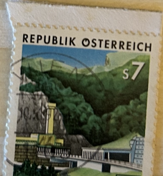
| SOURCE | TITLE| IMAGE MATCH | click to source page |
| www.ebay.com | Specimen, Austria Sc1541 Completion of Karawanken Tunnel | eBay | 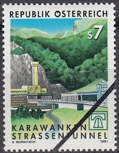 |
| www.ebay.com | Austria 1991 COMPLETION OF KARAWANKEN TUNNELS SC 1541 MNH | eBay | 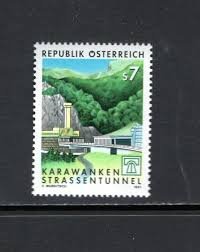 |
| www.ebay.com | Austria Stamp Issue Complete Scott # 1541 Unused Never ... |  |
| www.alamy.com | Mountain karawanken in austria hi-res stock photography and ... | 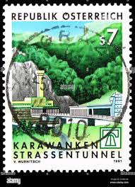 |
| esam.ir | تمبر اتریش - تونل - 1991 | 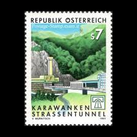 |
| www.ebay.com | Austria #1541 MNH | eBay |  |
| www.postbeeld.com | Stamp 1929, Austria 60G, Stamp out of set, 1929 - Collecting ... |  |
| fr.todocoleccion.net | var3/s österreich austria nº 1398 1978 25º aniv - Acheter ... | 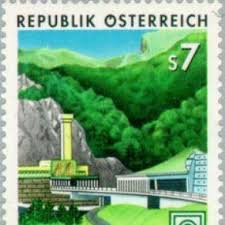 |
| esam.ir | تمبر اتریش جاده سازی 1991 | 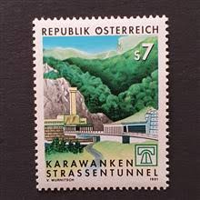 |
| satura-shop.com | Vierer Block 2033 Karawanken Tunnel Österreich | 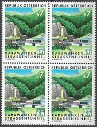 |
| www.dreamstime.com | Karawanken Tunnels Stock Photos - Free & Royalty-Free Stock ... | 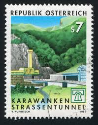 |
| www.tambrestan.com | 1 عدد تمبر تکمیل تونل کاراوانکن - اتریش 1991 |  |
| www.amazon.co.uk | Prophila Collection Austria 2031,2032,2033 (complete ... | 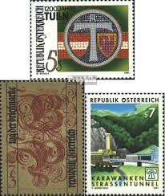 |
| oldthing.de | ÖSTERREICH 1991 Mi-Nr. 2033 ** MNH | Briefmarken günstig |  |
| www.mysticstamp.com | 769a - 1935 1c Yosemite, California, Green, Single from ... | 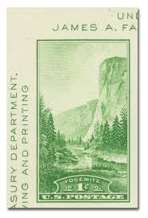 |
| findyourstampsvalue.com | Value of austria salzburg 70g stamps | 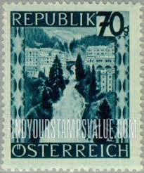 |
| www.facebook.com | This year France (https://www.paleophilatelie.eu/country ... |  |
| www.shutterstock.com | 25 Karawanks Tunnel Royalty-Free Images, Stock Photos ... |  |
| deqistamps.com | Austria Postage Stamps | 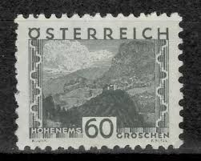 |
| esam.ir | سری تکی تمبر اتریش 1995 میلادی! | 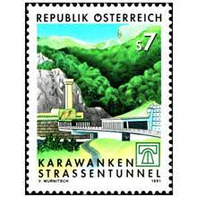 |
| pngtree.com | 2+ Semmering Photos, Pictures And Background Images For Free ... | 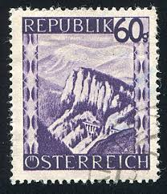 |
| www.stampcommunity.org | Collecting By Engraver - Page 95 - Stamp Community Forum | 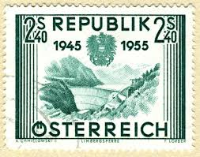 |
| www.todocoleccion.net | austria, 1991, túnel karawankel - Compra venta en todocoleccion | 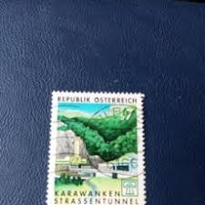 |
| www.etsy.com | Ten 1c Yosemite National Park Stamps .. Vintage Unused US ... | 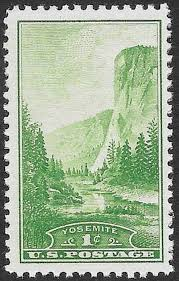 |
| www.youtube.com | A Gorgeous Set of Postage Stamps from Austria. - YouTube | 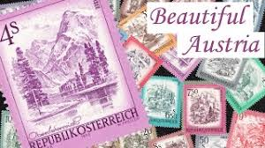 |
| travelstamps.com | Austria Travel Stamp – Travel Stamps | 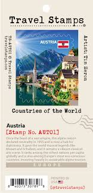 |
| www.alamy.com | AUSTRIA - CIRCA 1977: a stamp printed in Austria shows ... | 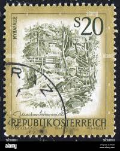 |
| findyourstampsvalue.com | Republic: Seewiesen 30g Dark violet stamp price, value | 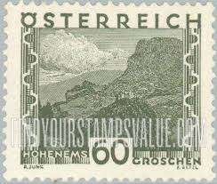 |
| www.reddit.com | Icelandic/Swiss Stamps : r/philately | 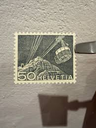 |
| www.mysticstamp.com | 751a - 1934 1c Yosemite, California, Green, Single from ... | 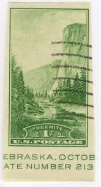 |
| www.dreamstime.com | Tunnel Serie Stock Photos - Free & Royalty-Free Stock Photos ... |  |
| worldstampsproject.org | Philately of Austria, the Second Republic: Varieties – World ... |  |
| www.shutterstock.com | 31 Finstermunz Royalty-Free Images, Stock Photos & Pictures ... | 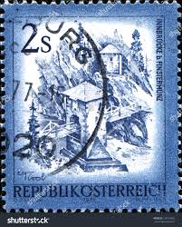 |
| www.linns.com | Austria corrects castle mistake with new stamp | 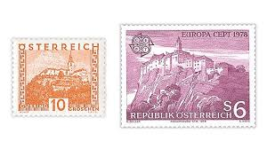 |
| www.stampedia.net | stampedia AUSTRIA STAMP catalog | 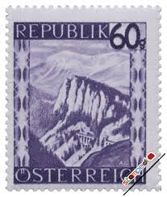 |
| www.freestampcatalogue.com | Stamps from Austria - Freestampcatalogue.com - The free ... | 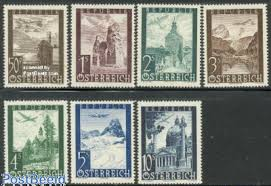 |
| www.austria.org | Burg Hochosterwitz — Austria in USA |  |
| www.stampcollectingblog.com | Beautiful Austria (Schönes Österreich) definitive postage ... | 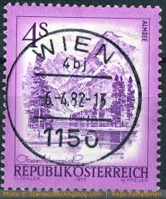 |
| www.austrianstamps.co.uk | Austrian Stamps - First Republic - 1932 Issues |  |
| library.brown.edu | StampEx023_1md.jpg | 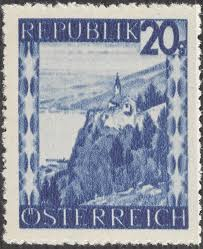 |
| volstamp.in.ua | Buy 1986 Austria Stamp (Martinswand near Zirl) MNH №1851 | 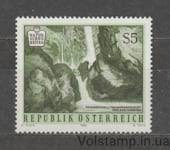 |
| worldstampsproject.org | Philately of Austria, Landscapes Issue (1945/48): Varieties ... | 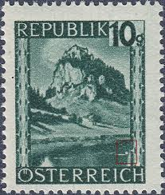 |
| www.ebay.com | Austria stamps - Stamp Day 1962-5 - MNH. | eBay | 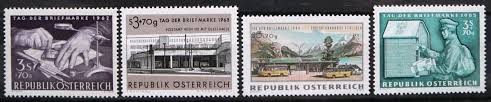 |
| www.hipstamp.com | Switzerland Swiss Helvetia 10 Technology and Landscape Stamp ... | 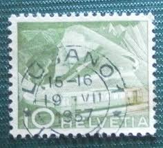 |
| www.stampexindia.com | AUSTRIA 1955-Limberg Dam, Agriculture, 1 Value, Used, Cat ... | 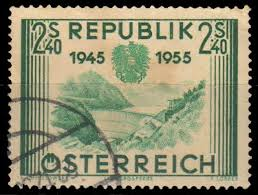 |
| www.reddit.com | What is your most valuable stamp in your collection? : r ... | 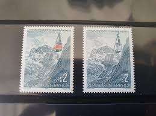 |
| www.aeiou.at | Completion of the Karawanken Tunnel | 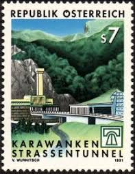 |
| www.instagram.com | Location Stamp Collection 📍 1. Belvedere 2. Schönbrunn 3 ... |  |
| en.wikipedia.org | Postage stamps and postal history of Liechtenstein - Wikipedia |  |
| www.bidcurios.com | Austria - 6x MNH stamps - Post Dues - (B-002/U2)z4 - BidCurios | 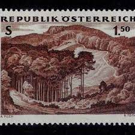 |
| www.istockphoto.com | 110+ Kalkalpen National Park Stock Photos, Pictures ... | 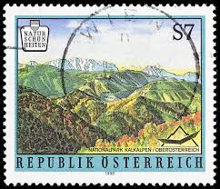 |
| www.germanstamps.net | Alpenvorland-Adria | GermanStamps.net | 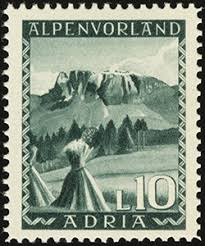 |
| thestampforum.boards.net | Austria : Stamps : General. | The Stamp Forum (TSF) | 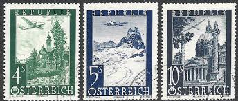 |
| postalmuseum.si.edu | Austria | National Postal Museum |  |
| rcss.in | RCSS - Rotary Philatelic | 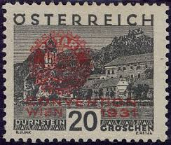 |
| www.tripadvisor.com | Postal Museum (2026) - All You MUST Know Before You Go (w ... |  |
| www.alamy.com | Ferlach austria hi-res stock photography and images - Alamy | 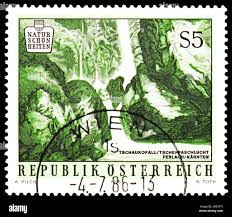 |
| www.dreamstime.com | Stamp Austria Carinthia Stock Photos - Free & Royalty-Free ... | 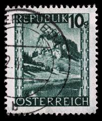 |
| www.mysticstamp.com | Worldwide - Europe - Austria - Page 1 - Mystic Stamp Company | 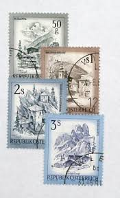 |